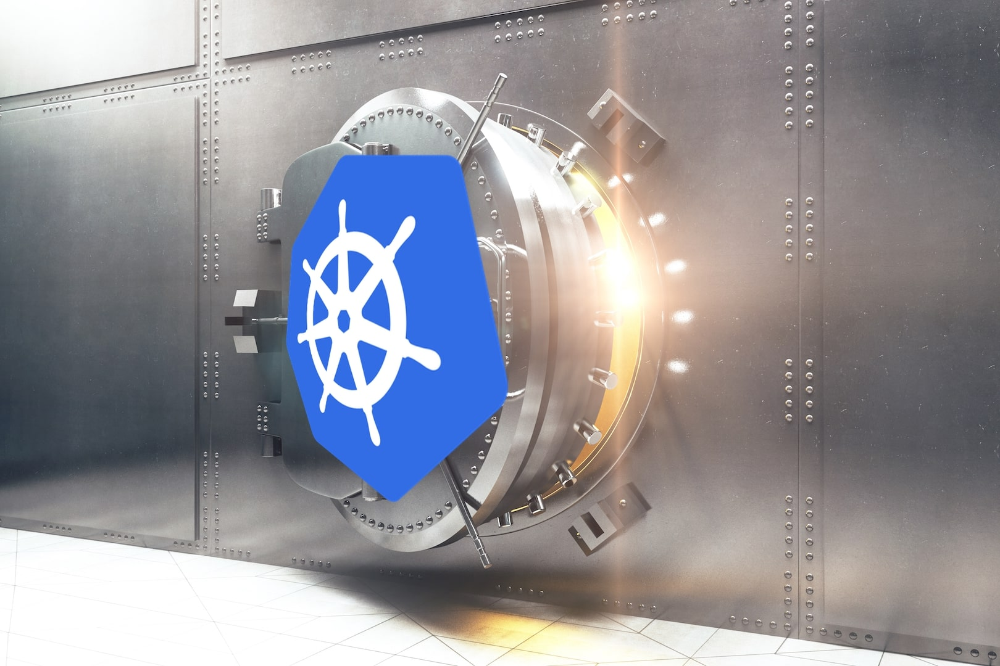

使用 Vault 与 Kubernetes 为密码提供强有力的保障

介绍
Kubernetes 已经成为了容器编排方案的工业标准，而来自 HashiCorp 的 Vault 则是密码管理的工业标准。那问题来了: 怎样将这两项技术结合使用从而可以让你在 Kubernetes 的应用程序中使用来自于 Vault 中心实例的密码呢？
一种解决方法是使用 AppRole 认证。Boostport 为 AppRoles 在 Kubernetes 上的使用提供了完美的集成。另一个可行的方法是使用 Kubernetes 认证。这种认证机制为 Vault 和 Kubernetes 集群创建一个可信的联系因而你可以使用一个服务账号到 Vault 进行认证。后期你可以使用 Kubernetes 的 Vault 节点获取和更新认证令牌。
这篇实践的文章中，我会向你展示如何使用一些 Go 助手工具实现诸如认证更新令牌这些相同的工作，并且还会进一步实现-从 Vault 到 Kubernetes 同步预定义的密码子集。
等级: 高级
准备工作
简单起见我有一些选项:
用多种不同的方法启动一个 Kubernetes 集群。通常来说，
minikube用来测试或者开发。我会使用kubeadm因为它非常简单的就可以启动一个*真正的*集群。在 Kubernetes 中，会使用
default命名空间。Vault 会在*开发*模式下运行。不要像在生产环境下那样使用它！ 确保在环境变量中设置了
VAULT_ADDR。代码示例中会使用 Ubuntu。这些已经在 GCE 上配置为 2 vCPU 和 7.5 GB 的 Ubuntu 18.10 VM 上进行了测试。（可以看看 GCP 上 $300 的免费套餐，就是说说而已哈…）
除非另有说明，将会使用 Bash。
Kubernetes
让我们从一个简单的测试集群开始。下面的代码你会看到一个简单节点的安装步骤是什么样的。
# 1) Install Kubernetes on a Ubuntu machine
sudo -i
curl -s https://packages.cloud.google.com/apt/doc/apt-key.gpg | apt-key add -
echo 'deb http://apt.kubernetes.io/ kubernetes-xenial main' >> /etc/apt/sources.list.d/kubernetes.list
apt update && apt install -y docker.io kubelet kubeadm kubectl
sudo systemctl enable docker.service
kubeadm init --pod-network-cidr=10.244.0.0/16 # Flannel pod network, see below
exit
# 2) Prepare kubectl
mkdir -p $HOME/.kube
sudo cp -i /etc/kubernetes/admin.conf $HOME/.kube/config
sudo chown $(id -u):$(id -g) $HOME/.kube/config
echo "source <(kubectl completion bash); alias k=kubectl; complete -F __start_kubectl k" >> .bashrc && exec $SHELL
# 3) Finalize K8s config
kubectl cluster-info
kubectl apply -f https://raw.githubusercontent.com/coreos/flannel/master/Documentation/kube-flannel.yml
kubectl taint nodes --all node-role.kubernetes.io/master-
kubectl get nodes -o wide
# For details, see:
# - https://kubernetes.io/docs/setup/independent/install-kubeadm/
# - https://kubernetes.io/docs/setup/independent/create-cluster-kubeadm/
Vault
安装
Vault 的安装非常的直接: 下载解压二进制包即可:
# Install Vault
sudo apt install -y zip
curl -OL https://releases.hashicorp.com/vault/1.1.1/vault_1.1.1_linux_amd64.zip
unzip vault_1.1.1_linux_amd64.zip
sudo mv vault /usr/local/bin/
vault -autocomplete-install && exec $SHELL
运行一个 Vault 服务器
我们会以*开发*模式运行一个 Vault 服务器。同样，这也非常的简单。请记住，当启动一个开发服务器的时候，一个 root 令牌会被写入到 $HOME/.vault-token 中，对 root 用户来说同样如此。使用 & 符号会让 Vault 进程在后台运行因此我们可以继续使用相同的 shell。
$ vault server -dev -dev-listen-address=0.0.0.0:8200 &
==> Vault server configuration:
Api Address: http://0.0.0.0:8200
Cgo: disabled
Cluster Address: https://0.0.0.0:8201
Listener 1: tcp (addr: "0.0.0.0:8200", cluster address: "0.0.0.0:8201", max_request_duration: "1m30s", max_request_size: "33554432", tls: "disabled")
Log Level: info
Mlock: supported: true, enabled: false
Storage: inmem
Version: Vault v1.1.1
Version Sha: a3dcd63451cf6da1d04928b601bbe9748d53842e
配置 Kubernetes 认证
现在我们必须确保 Kubernetes 可以通过 Kubernetes 认证与 Vault 进行通信。这将会在 Kubernetes 和 Vault 之间建立一个信任的联系。预命名的 vault-demo-role 将会映射策略以及定义一个 TTL。
因为我们使用 kubeadm 启动的 Kubernetes 集群，它非常轻松的就可以找到 kubernetes_ca_cert 参数的证书颁发机构（CA）存储的值。如果使用一个在云安装的 Kubernetes 该过程会比较困难一些。
# NOTE: You may need to set these addresses differently.
export INTERNAL_IP=$(dig +short `hostname -f`)
export VAULT_ADDR=http://${INTERNAL_IP}:8200
# Enable and configure the Kubernetes auth method.
# For details, see:
# - https://www.vaultproject.io/docs/auth/kubernetes.html
# - https://www.vaultproject.io/api/auth/kubernetes/index.html
vault auth enable kubernetes
vault write auth/kubernetes/config \
kubernetes_host=https://${INTERNAL_IP}:6443 \
kubernetes_ca_cert=@/etc/kubernetes/pki/ca.crt
vault write auth/kubernetes/role/vault-demo-role \
bound_service_account_names=vault-serviceaccount \
bound_service_account_namespaces=default \
policies=vault-demo-policy \
ttl=1h
# Create a policy for demo purposes
cat <<EOF | vault policy write vault-demo-policy -
path "sys/mounts" { capabilities = ["read"] }
path "secret/data/demo/*" { capabilities = ["read"] }
path "secret/metadata/demo/*" { capabilities = ["list"] }
EOF
# Write some demo secret
vault kv put secret/demo/most-used-password password=123456
vault kv put secret/demo/first one=1234567890 two=2345678901
vault kv put secret/demo/second green=lantern poison=ivy
vault kv put secret/demo/greek/alpha philosopher=plato
vault kv put secret/demo/greek/beta god=zeus
vault kv put secret/demo/greek/gamma mountain=olympus
基于角色的访问控制（RBAC）
在 Kubernetes 这边，我们现在需要安装设置相匹配的 RBAC。首先我们创建一个名称为 vault-serviceaccount 的服务账号。然后我们会添加一个叫做 vault-closterrolebinding 的集群角色绑定，因而我们新创建的服务账号可以被允许使用默认的集群角色 system:auth-delegator 发送认证请求。角色 vault-secrectadmin-role 和角色绑定 vault-secretadmin-rolebinding 也绑定到了 vault-serviceaccount 上这样我们就可以同步密码了。
---
apiVersion: v1
kind: ServiceAccount
metadata:
name: vault-serviceaccount
---
apiVersion: rbac.authorization.k8s.io/v1beta1
kind: ClusterRoleBinding
metadata:
name: vault-clusterrolebinding
roleRef:
apiGroup: rbac.authorization.k8s.io
kind: ClusterRole
name: system:auth-delegator
subjects:
- kind: ServiceAccount
name: vault-serviceaccount
namespace: default
---
kind: Role
apiVersion: rbac.authorization.k8s.io/v1
metadata:
name: vault-secretadmin-role
rules:
- apiGroups: [""]
resources: ["secrets"]
verbs: ["*"]
---
kind: RoleBinding
apiVersion: rbac.authorization.k8s.io/v1
metadata:
name: vault-secretadmin-rolebinding
subjects:
- kind: ServiceAccount
name: vault-serviceaccount
roleRef:
kind: Role
name: vault-secretadmin-role
apiGroup: rbac.authorization.k8s.io
让我们应用下面的配置:
$ k apply -f vault-rbac.yaml
serviceaccount/vault-serviceaccount created
clusterrolebinding.rbac.authorization.k8s.io/vault-clusterrolebinding created
role.rbac.authorization.k8s.io/vault-secret-admin-role created
rolebinding.rbac.authorization.k8s.io/vault-demo-secret-admin-rolebinding created
准备工作完成了。现在我们可以移步到我们的用例上了。
用例
我们将会覆盖下面的这三个用例:
第一个例子会演示怎样认证到 Vault 然后使用一个初始化的容器获取一个认证令牌。
第二个例子会演示怎样使用 sidecar 容器更新这个令牌。
第三个例子将会演示怎样从 Vault 到 Kubernetes 同步密码。
所有这三个用例均由我在 PostFinance 的同事构建的三个 Docker 镜像上运行的。特别感谢 Marc Sauter，他在 Seth Vargo 工作的启发下编纂了最初的实现方案。创建的这三个镜像-在 Docker Hub 上均可获取到-包括了一点 Go 的助手工具，代码均可以从 GitHub 上找到。
使用初始容器进行认证
第一个例子会展示 vault-kubernetes-authenticator （简称 *auther*）镜像的用法。auther 在一个初始容器中运行，使用服务账号 vault-serviceaccount 向 Vault 进行认证然后将 Vault 的认证令牌写入到 /home/vault/.vault-token 中。
---
apiVersion: apps/v1
kind: Deployment
metadata:
name: vault-kubernetes-authenticator-demo
labels:
appl: vault-kubernetes-authenticator-demo
spec:
replicas: 1
selector:
matchLabels:
appl: vault-kubernetes-authenticator-demo
template:
metadata:
labels:
appl: vault-kubernetes-authenticator-demo
spec:
serviceAccountName: vault-serviceaccount
volumes:
- name: vault-token
emptyDir:
medium: Memory
initContainers:
- name: vault-kubernetes-authenticator
image: postfinance/vault-kubernetes-authenticator
imagePullPolicy: Always
volumeMounts:
- name: vault-token
mountPath: /home/vault
env:
- name: VAULT_ADDR
value: ${VAULT_ADDR}
- name: VAULT_ROLE
value: vault-demo-role
- name: VAULT_TOKEN_PATH
value: /home/vault/.vault-token
containers:
- name: kuard
image: gcr.io/kuar-demo/kuard-amd64:blue
volumeMounts:
- name: vault-token
mountPath: /home/vault
我们应用这些配置然后执行一些测试来验证所有配置都能成功运行。
$ envsubst < vault-kubernetes-authenticator-demo.yaml | k apply -f -
deployment.apps/vault-kubernetes-authenticator-demo created
$ k get all
NAME READY STATUS RESTARTS AGE
pod/vault-kubernetes-authenticator-demo-fc49b957c-b5bnx 1/1 Running 0 81s
NAME TYPE CLUSTER-IP EXTERNAL-IP PORT(S) AGE
service/kubernetes ClusterIP 10.96.0.1 <none> 443/TCP 20h
NAME READY UP-TO-DATE AVAILABLE AGE
deployment.apps/vault-kubernetes-authenticator-demo 1/1 1 1 81s
NAME DESIRED CURRENT READY AGE
replicaset.apps/vault-kubernetes-authenticator-demo-fc49b957c 1 1 1 81s
$ k logs vault-kubernetes-authenticator-demo-fc49b957c-b5bnx -c vault-kubernetes-authenticator
2019/04/16 04:45:23 successfully authenticated to vault
2019/04/16 04:45:23 successfully stored vault token at /home/vault/.vault-token
$ k exec vault-kubernetes-authenticator-demo-fc49b957c-b5bnx -- sh -c "VAULT_ADDR=${VAULT_ADDR} sh"
~ $ cat /home/vault/.vault-token; echo
s.xrrJoCARIC0Z84vcvcwuH5XG
~ $ wget --header="X-Vault-Token: $(cat /home/vault/.vault-token)" -q -O - ${VAULT_ADDR}/v1/secret/data/demo/most-used-password
{"request_id":"12660a6b-7ad0-85bc-8841-d21c7cc8248a","lease_id":"","renewable":false,"lease_duration":0,"data":{"data":{"password":"123456"},"metadata":{"created_time":"2019-04-16T05:11:44.651116748Z","deletion_time":"","destroyed":false,"version":1}},"wrap_info":null,"warnings":null,"auth":null}
~ $ wget --header="X-Vault-Token: $(cat /home/vault/.vault-token)" -q -O - ${VAULT_ADDR}/v1/secret/data/sensitive-password
wget: server returned error: HTTP/1.1 403 Forbidden
使用 Sidecar 更新令牌
第二个例子将向你展示 vault-kubernetes-token-renewer （简称 *renewer*）镜像的使用。renewer 运行在一个 sidecar 容器中，周期性地检查 TTL 然后根据检查的情况更新认证令牌。
---
apiVersion: apps/v1
kind: Deployment
metadata:
name: vault-kubernetes-token-renewer-demo
labels:
appl: vault-kubernetes-token-renewer-demo
spec:
replicas: 1
selector:
matchLabels:
appl: vault-kubernetes-token-renewer-demo
template:
metadata:
labels:
appl: vault-kubernetes-token-renewer-demo
spec:
shareProcessNamespace: true
serviceAccountName: vault-serviceaccount
volumes:
- name: vault-token
emptyDir:
medium: Memory
initContainers:
- name: vault-kubernetes-authenticator
image: postfinance/vault-kubernetes-authenticator
imagePullPolicy: Always
volumeMounts:
- name: vault-token
mountPath: /home/vault
env:
- name: VAULT_ADDR
value: ${VAULT_ADDR}
- name: VAULT_ROLE
value: vault-demo-role
- name: VAULT_TOKEN_PATH
value: /home/vault/.vault-token
containers:
- name: vault-kubernetes-token-renewer
image: postfinance/vault-kubernetes-token-renewer
imagePullPolicy: Always
volumeMounts:
- name: vault-token
mountPath: /home/vault
env:
- name: VAULT_ADDR
value: ${VAULT_ADDR}
- name: VAULT_ROLE
value: vault-demo-role
- name: VAULT_TOKEN_PATH
value: /home/vault/.vault-token
- name: kuard
image: gcr.io/kuar-demo/kuard-amd64:blue
volumeMounts:
- name: vault-token
mountPath: /home/vault
我们也同样应用一下这些配置然后做一些验证。（我删除了先前的 deployment。）
$ envsubst < vault-kubernetes-token-renewer-demo.yaml | k apply -f -
deployment.apps/vault-kubernetes-token-renewer-demo created
$ k get all
NAME READY STATUS RESTARTS AGE
pod/vault-kubernetes-token-renewer-demo-694cc7dbbd-rkbbs 2/2 Running 0 4s
NAME TYPE CLUSTER-IP EXTERNAL-IP PORT(S) AGE
service/kubernetes ClusterIP 10.96.0.1 <none> 443/TCP 31h
NAME READY UP-TO-DATE AVAILABLE AGE
deployment.apps/vault-kubernetes-token-renewer-demo 1/1 1 1 4s
NAME DESIRED CURRENT READY AGE
replicaset.apps/vault-kubernetes-token-renewer-demo-694cc7dbbd 1 1 1 4s
$ k logs vault-kubernetes-token-renewer-demo-694cc7dbbd-rkbbs -c vault-kubernetes-authenticator
2019/04/16 15:40:55 successfully authenticated to vault
2019/04/16 15:40:55 successfully stored vault token at /home/vault/.vault-token
$ k logs vault-kubernetes-token-renewer-demo-694cc7dbbd-rkbbs -c vault-kubernetes-token-renewer
2019/04/16 15:40:56 start renewer loop
2019/04/16 15:40:56 token renewed
从 Vault 到 Kubernetes 同步密码
第三个例子将向你展示 vault-kubernetes-synchronizer （简称 *syncer*）的用法。syncer 可以用在多个方面。在这个 demo 里面，一个 Kubernetes 任务将被用来从预定义的路径一次性同步 Vault 密码。这些 Vault 密码将会被写入到相应的 Kubernetes 密码中。
---
apiVersion: batch/v1
kind: Job
metadata:
name: vault-kubernetes-synchronizer-demo
spec:
backoffLimit: 0
template:
spec:
serviceAccountName: vault-serviceaccount
restartPolicy: Never
volumes:
- name: vault-token
emptyDir:
medium: Memory
initContainers:
- name: vault-kubernetes-authenticator
image: postfinance/vault-kubernetes-authenticator
imagePullPolicy: Always
volumeMounts:
- name: vault-token
mountPath: /home/vault
env:
- name: VAULT_ADDR
value: ${VAULT_ADDR}
- name: VAULT_ROLE
value: vault-demo-role
- name: VAULT_TOKEN_PATH
value: /home/vault/.vault-token
containers:
- name: vault-kubernetes-synchronizer
image: postfinance/vault-kubernetes-synchronizer
imagePullPolicy: Always
volumeMounts:
- name: vault-token
mountPath: /home/vault
env:
- name: VAULT_ADDR
value: ${VAULT_ADDR}
- name: VAULT_ROLE
value: vault-demo-role
- name: VAULT_TOKEN_PATH
value: /home/vault/.vault-token
- name: VAULT_SECRETS
value: secret/demo/first,secret/demo/second,secret/demo/first:third,secret/demo/greek/
同样，我们也应用一下这些配置然后看看所有的配置是否如预期一样运行正常:
$ envsubst < vault-kubernetes-synchronizer-demo.yaml | k apply -f -
job.batch/vault-kubernetes-synchronizer-demo created
$ k get all
NAME READY STATUS RESTARTS AGE
pod/vault-kubernetes-synchronizer-demo-m2xnz 1/1 Running 0 4s
NAME TYPE CLUSTER-IP EXTERNAL-IP PORT(S) AGE
service/kubernetes ClusterIP 10.96.0.1 <none> 443/TCP 3d5h
NAME COMPLETIONS DURATION AGE
job.batch/vault-kubernetes-synchronizer-demo 0/1 4s 4s
$ k logs pod/vault-kubernetes-synchronizer-demo-m2xnz -c vault-kubernetes-authenticator
2019/04/18 14:29:42 successfully authenticated to vault
2019/04/18 14:29:42 successfully stored vault token at /home/vault/.vault-token
$ k logs pod/vault-kubernetes-synchronizer-demo-m2xnz
2019/04/18 14:29:43 read secret/demo/first from vault
2019/04/18 14:29:43 update secret third from vault secret secret/demo/first
2019/04/18 14:29:43 read secret/demo/greek/alpha from vault
2019/04/18 14:29:43 update secret alpha from vault secret secret/demo/greek/alpha
2019/04/18 14:29:43 read secret/demo/greek/beta from vault
2019/04/18 14:29:43 update secret beta from vault secret secret/demo/greek/beta
2019/04/18 14:29:43 read secret/demo/greek/gamma from vault
2019/04/18 14:29:43 update secret gamma from vault secret secret/demo/greek/gamma
2019/04/18 14:29:43 read secret/demo/first from vault
2019/04/18 14:29:43 update secret first from vault secret secret/demo/first
2019/04/18 14:29:43 read secret/demo/second from vault
2019/04/18 14:29:43 update secret second from vault secret secret/demo/second
2019/04/18 14:29:44 secrets successfully synchronized
$ k get secrets
NAME TYPE DATA AGE
alpha Opaque 1 2m43s
beta Opaque 1 2m43s
default-token-ssd7f kubernetes.io/service-account-token 3 3d5h
first Opaque 2 2m43s
gamma Opaque 1 2m43s
second Opaque 2 2m43s
third Opaque 2 2m43s
vault-serviceaccount-token-f6tnw kubernetes.io/service-account-token 3 2d20h
$ k describe secret first
Name: first
Namespace: default
Labels: <none>
Annotations: vault-secret: secret/demo/first
Type: Opaque
Data
====
one: 10 bytes
two: 10 bytes
$ k describe secret alpha
Name: alpha
Namespace: default
Labels: <none>
Annotations: vault-secret: secret/demo/greek/alpha
Type: Opaque
Data
====
philosopher: 5 bytes
syncer 同样可以用在 Kubernetes 的 cron 任务中从 Vault 周期性同步密码或者同步到另一个 Kubernetes deployment 的初始容器中，这样密码就会保持最新状态。
需要注意的是 Kubernetes 密码保护不是很好。Seth Vargo 在最近的 FOSDEM 访谈中指出，默认情况下，它们仅做了 base64 编码和存储，就像在 etcd 中那样。你应该允许数据的静态加密。也请确保你只同步那些你的 Kubernetes 应用程序使用的那些密码，这些密码由相应的 Vault 策略以及命名角色保护。除此之外，该方法还允许你以云原生行为使用密码。你的应用程序不能直接访问 Vault 密码可以被注入到环境变量中。
结论
Kubernetes 和 Vault 这两项技术在结合使用或者集成它们使用时均是很棒的组合。集成的方案看似不简单但是依旧可行。这篇文章中我已经向你展示了怎样实现这两者的集成，希望会对你有所帮助。
你或许会问了为什么明明可以用 Vault 官方提供的镜像运行一个节点用来实现相同的事情却偏偏选择了一些第三方提供的镜像呢。原因如下: Vault 节点需要一个配置文件而不是环境变量，这也就意味着你必须去管理其他的配置映射。并且当前的节点不能同步密码。另外，第三方的镜像更轻量。官方的 Vault 镜像大概 100 MB。而 auther 和 renewer 镜像大约也就 10 MB syncer 镜像大约40 MB。